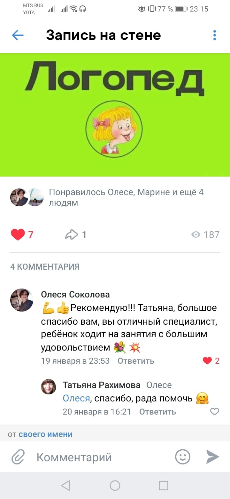
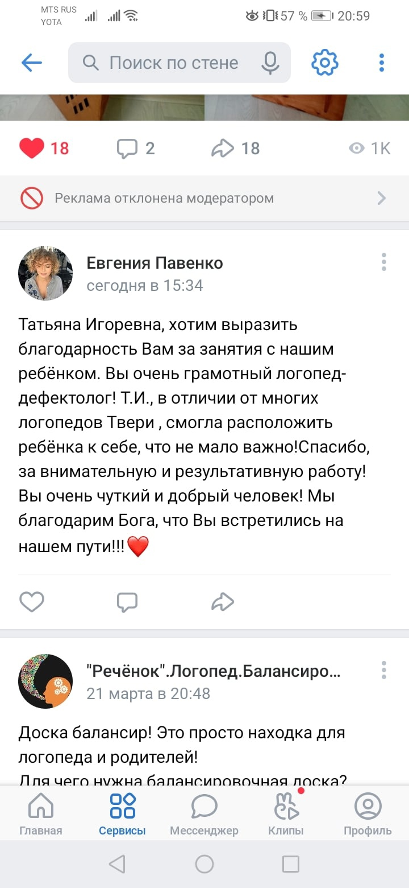
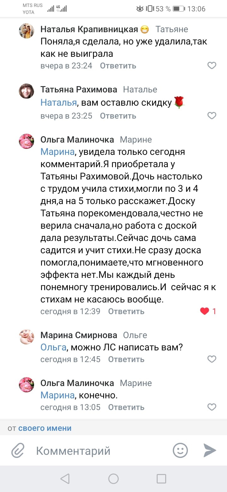
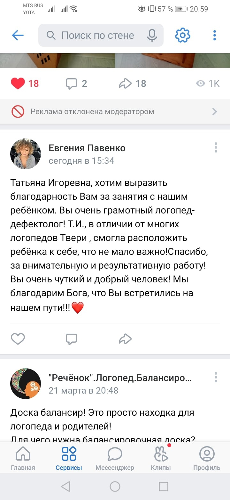
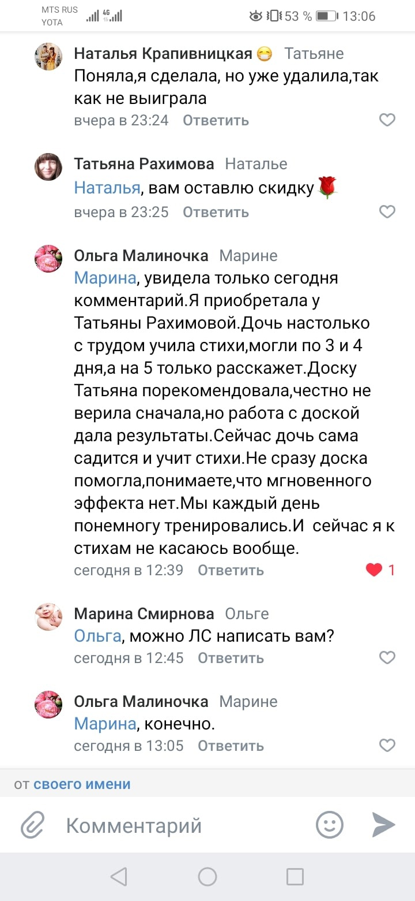

Отзывы
Татьяна прекрасный логопед, а так же добрый и отзывчивый человек. Сын занимается с ней уже полгода. В начале это был неугомонный, отказывающийся от занятий, ребенок-молчун, но Татьяна смогла подобрать к нему подход. Сейчас сын идёт на занятия с удовольствием, сидит и выполняет задания, повторяет много разных слов. Спасибо, Таня!!! (Евгения - мама)
Очень прекрасный ЛОГОПЕД, обращались к другим, но нет ребёнок выбрал Татьяну, только она нашла к нам подход ! Больше года занимаемся, результат на лицо, у ребёнка большое желание ходить на занятия, каждый поход для ребёнка достижение в развитие речи, усидчивости, стремлении заниматься! ОГРОМНОЕ СПАСИБО ТАТЬЯНА ЗА ВАШУ РАБОТУ! 🌹🌹🌹 (Анастасия - мама)
Спасибо огромное Татьяне 😍 Владислав с удовольствием бежит на занятия. Из всех специалистов к которым мы ходили, только Татьяна смогла найти к нам подход и общий язык 😝 с сынулькой. Огромная Вам благодарность за терпение, Татьяна. 👍😍 (Олеся - мама)
 


